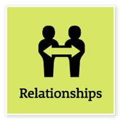
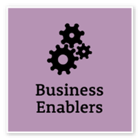
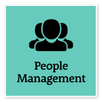

|
Manage Self |
- Be a professional role model for colleagues, set high personal goals and take pride in achieving them
- Actively seek, reflect on and act on feedback about your performance
- Reflect on and use negative feedback as an opportunity for growth and improvement
- Take the initiative and act in a decisive way
- Pursue and apply new knowledge and practices relevant to your organisation to improve outcomes |
Advanced |
- Researched emerging AI approaches, including agentic workflows, and applied findings to assessment design and technical advice
- Used feedback and reflection to refine how complex technical work is explained and prioritised |
 |
Communicate Effectively |
- Tailor communication to suit the needs, backgrounds and perspectives of diverse audiences and address barriers to participation
- Clearly explain complex ideas and arguments to individuals and groups
- Create opportunities for others to contribute
- Share information with other teams and business units to enable informed decision-making
- Write clearly and concisely in a range of styles and formats
- Use contemporary communication channels to share information, engage and interact with diverse audiences
- Pay attention and encourage others to express their views |
Adept |
- Translated technical AI data-readiness requirements into assessment questions, evidence guidance and advice for business users
- Shared research and solution options with policy, governance and technical colleagues |
|
Commit to Customer Service |
- Take responsibility for delivering high-quality customer-focused services
- Design processes and policies based on the customers’ experience and engage people with lived experience to inform service improvements
- Create opportunities to learn about and measure what is important to customers by engaging with a wide range of customer experience
- Use customer data, feedback and insights to improve service delivery
- Find opportunities to collaborate with internal and external stakeholders to improve outcomes for customers
- Maintain relationships with key customers in your area of expertise
- Connect and collaborate with relevant customers from the community |
Adept |
- Designed AI data-readiness assessment prototypes with contextual questions and evidence guidance for NSW Government users
- Developed consultation and reporting workflows to help internal teams capture, review and use information |
|
Work Collaboratively |
- Encourage a workplace culture that values collaboration
- Communicate with other teams to improve information sharing
- Share lessons learned with other teams and business units
- Identify opportunities to collaborate with stakeholders, including people with lived experience, to develop better processes and solutions
- Actively use digital information platforms, collaboration tools and other digital technologies to share information and work with diverse audiences to solve problems and improve services
- Consider diverse cultural perspectives to provide insights into collaborative work |
Adept |
- Worked with colleagues on the relationship between AI use-case assessment, data-readiness criteria and practical tool design
- Shared research, prototypes and technical guidance to support team discussions and capability uplift |
|
Deliver Results |
- Use your own and others’ expertise to achieve outcomes, and take responsibility for delivering intended outcomes
- Ensure staff understand expected goals and acknowledge staff success in achieving these
- Identify the resources people need and ensure goals are achieved within budget and on time
- Use business data to evaluate outcomes and inform continuous improvement
- Identify priorities that need to change and ensure the way resources are allocated meets new business needs
- Ensure you budget for and clearly state the financial impacts of new priorities |
Adept |
- Led delivery of the AI strategy consultation automation workflow to production in four weeks
- Developed assessment prototypes and operational reporting solutions with attention to traceability and human review |
|
Think and Solve Problems |
- Undertake objective, critical analysis to reach accurate conclusions that recognise and manage contextual issues
- Work through issues, weigh up alternatives and identify the most effective solutions in collaboration with others
- Consider the wider business context when thinking about options to resolve issues
- Explore a range of possibilities and creative alternatives to improve systems, processes and business practices
- Put systems and processes in place that are supported by high-quality research and analysis
- Look for opportunities to design innovative solutions to meet customers’ needs and service demands
- Evaluate the performance and effectiveness of services, policies and programs against clear criteria |
Advanced |
- Developed 120 AI data-readiness criteria and examined their coverage against technical standards
- Turned complex assessment requirements into conditional questions, evidence guidance and traceable prototype results |
 |
Technology |
- Promote using creative and accessible technology in your organisation
- Actively manage risk to ensure compliance with cyber security and acceptable use of technology, including record keeping, cybersecurity, privacy, and responsible artificial intelligence use
- Keep up to date with new technology and technological trends to understand how using them can support business outcomes
- Seek advice from appropriate subject matter experts about using technology to achieve business strategies and outcomes
- Lead the appropriate use of digital systems, ensuring outputs are aligned with legal, ethical, and organisational standards |
Advanced |
- Prototyped AI assessment and source-grounded generative AI workflows with human review
- Used Power Automate, SharePoint, Python, Microsoft Fabric and Power BI in automation, analysis and reporting solutions |
 |
Manage and Develop People |
- Collaborate with your team to set clear performance standards and deadlines in line with established performance development frameworks
- Look for ways to develop team capability and recognise and develop individual potential
- Be constructive and build on strengths by giving timely feedback that people can act on
- Identify and act on opportunities to coach and mentor others
- Recognise performance issues that need to be dealt with and work promptly to resolve them
- Effectively support and manage team members who are working flexibly and in different locations
- Create a safe environment that considers and respects team members’ individual differences, backgrounds and cultures
- Reflect on feedback about your management style and potential areas where you can improve |
Intermediate |
- Shared practical guidance on automation, AI development approaches and data architecture with colleagues
- Supported team capability through knowledge sharing, process design and collaborative problem-solving |
|
Optimise Business Outcomes |
- Initiate and develop longer term goals and plans to guide the team’s work in line with organisational objectives
- Consider impacts of industry trends when planning and allocating resources to achieve business outcomes
- When planning resources, implement processes that encourage the attraction and retention of people with diverse cultures, backgrounds and experiences
- Ensure team members base their decisions on a sound understanding of public sector business and risk management principles
- Monitor performance against standards and keep others informed about progress and performance outcomes |
Adept |
- Planned AI and automation work around business needs, delivery deadlines and governance considerations
- Developed budget and milestone reporting and researched emerging-AI options to inform planning decisions |